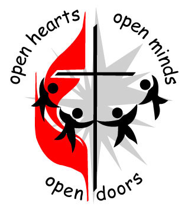

The Adult Discussion Group meets each Sunday before
the service at 9:30 AM in the overflow area at the
back of the sanctuary.
GLOW,
(God Lights Our Way),
our children's program, is held at the same time as the Sunday
worship service.
Our Wednesday night program for youth kindergarten through 6th grade is Kids' JAM. It runs 6:00-7:30 PM.
A staffed nursery is available for the care of young children during the worship service.
Rev. Beth Harbaugh,
Pastor VMUMC

For the Lenten worship season, including Lenten classes and church missions, we will be continuing our response to the recent violent tragedy at Perry High School as we raise our awareness about how we are called to act in the world.
Click here to read Rev. Beth's Monthly Message.
Our regular announcements are in The Grapevine, here.
Stay connected by visiting our Facebook page. You can click here to reach it.
The Van Meter United Methodist Church is a community in the service of Christ.
Click here for directions on how to find us.
Call us at: (515) 996-2572
Email us at: office@vmumc.com
Ash Wednesday and Lent
Ash Wednesday
marks the beginning of
the Lenten season. In
this 40-day period, Christians worldwide prepare our hearts for
Jesus' death on the cross and his resurrection three days later
on Easter.
S.W.A.G. Youth Group
March 3, 6:30-7:30 PM
Middle school youth group meeting at the church
March 10, 6:30-7:30 PM
High school youth group meeting at the church
Youth Service Project
Sunday, March 10
The youth groups (S.W.A.G.) will be volunteering at the Bidwell
Pantry.

The Van Meter Church is part of the Iowa Conference of the United Methodist Church.
Wednesday evenings
6:00-7:30 PM
Kids' J.A.M. (Jesus and Me)
This is our Wednesday night program for elementary-age students to
learn the love of Jesus while having fun. Drop-ins are welcome.
If you would like to volunteer to lend a hand with J.A.M. (for just
one evening or several) call the church office or just sign up at
the church.
Missions of the Month
Our church has adopted a room at the Hope Center for Women and
Children, funding shelter, meals, essential personal items, support
and training, individualized care plans, and Christian community and
guidance for the year.

Good Samaritan Food Pantry in Adel
We are
collecting toothbrushes (still in their unopened packages) for the
pantry.
Learn more about the food pantry here.
Sundays:
9:30 AM Adult Discussion Group
meets in the overflow area behind the sanctuary. The current topic
is based on Adam Hamilton's book
Wrestling with Doubt - Finding Faith. Reading the book is
not required.
Sign up to be a Worship Helper
You may use
this link
or just talk to Leslie Herman.
Exercise Your Faith
Our
exercise group
meets at the church each Monday from
1:30-2:30 PM. Join us for a time of low-impact
exercises (no floor work), encouragement, and sharing health tips.
Bread Ministry
We have a
bread ministry
in cooperation with Panera Bread company. We need help picking up
packages from Panera and bringing them to the church. Sign up for a
one-time delivery or several.
Sign up by clicking on this link.
Need Help?
Our church is a member of the Adel Ministerial Association (AMA).
The AMA has an emergency fund which is used as a shared resource.
Learn more here.